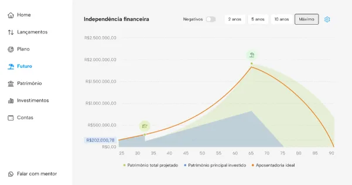

Faturamento é ego.
Lucro é saúde financeira.
Trabalhar mais horas ou dar mais plantões não é o caminho para a sua liberdade. O caminho está em estancar as sangrias invisíveis e estruturar o patrimônio de forma consciente.
Diagnóstico financeiro médico
Onde está o ralo de dinheiro do seu consultório?
Quatro pontos cegos corroem o resultado enquanto você se desdobra no atendimento.
-
A falsa prosperidade
Consultórios que faturam R$ 200 mil por mês e fecham o período no vermelho, por amadorismo operacional e confusão crônica entre pessoa física e jurídica.
-
A sangria invisível
Perde-se mais com bitributação, glosas de planos e seguros ineficientes do que rende qualquer aplicação. A conta não está na Bolsa: está no consultório.
-
O emprego auto-outorgado
Se a receita depende cem por cento da sua presença física, você não construiu um ativo. Construiu um emprego de luxo, e exaustivo.
-
A vulnerabilidade patrimonial
Sem blindagem e sem sucessão, qualquer intercorrência paralisa a sua única fonte de renda — e o patrimônio construído fica exposto.
Este ecossistema é para você?
Sim, se você…
- Já tem alta renda e está cansado de ver o dinheiro sumir de forma invisível.
- Quer sair da dependência de plantões massacrantes.
- Quer transformar a prática clínica em um ativo lucrativo e seguro.
Não, se você…
- Procura promessa de enriquecimento rápido.
- Acredita que o contador resolve tudo sozinho, sem a sua visão estratégica.
- Quer seguir só na técnica, sem assumir o papel de médico gestor.
A prova
Não é o primeiro consultório que passa por aqui
-
400+
famílias de profissionais da saúde
já passaram pelo método
-
85%
de renovações de clientes
quem entra, fica — e continua no acompanhamento
-
2+
décadas dentro do sistema financeiro
no Private Banking, antes de virar o método para o médico
Quando conheci a Dani, eu estava completamente perdida em relação às finanças da empresa. Não entendia de fluxo de caixa, gestão financeira, reserva de emergência ou investimentos, e tinha muito medo de tomar decisões erradas.
Com a orientação dela, organizei a empresa, passei a entender melhor os números e, principalmente, transformei minha relação com o dinheiro. Eu tinha receio de tirar recursos da empresa para formar minha reserva financeira pessoal, com medo de que faltasse no futuro. A Dani me mostrou que planejamento traz segurança, não risco.
Hoje tenho uma reserva financeira que nunca consegui construir antes, uma empresa muito mais organizada e tranquilidade para tomar decisões. Mais do que organizar números, ela me ajudou a desenvolver uma mentalidade financeira que impacta meu negócio e minha vida pessoal todos os dias.
Antes de termos um planejamento financeiro estruturado, percebíamos o quanto uma vida financeira desorganizada afeta todas as áreas da vida. Quando a saúde financeira não vai bem, o sono não é o mesmo, o emocional fica abalado e a preocupação acaba tomando conta de tudo.
Com o acompanhamento da Dani, passamos a enxergar o dinheiro de forma diferente. Hoje temos mais organização, mais clareza sobre nossos gastos e segurança para tomar decisões. Conseguimos construir uma reserva financeira, planejar projetos futuros e investir com mais tranquilidade, sabendo exatamente para onde nosso dinheiro está indo.
Essa organização trouxe não apenas uma melhora na nossa vida financeira, mas também mais tranquilidade e qualidade de vida. Hoje nos sentimos preparados para o futuro, porque entendemos a importância de planejar, se organizar e construir um caminho financeiro sustentável.
Sem dúvida, essa mudança teve um impacto muito positivo na nossa vida pessoal e profissional. Foi uma transformação muito maior do que eu imaginava e sou extremamente grata por todo esse processo.
O que mais marcou para mim nesse processo foi que não mudou apenas a forma como eu organizava meu dinheiro, mas também a minha mentalidade. A partir do momento em que comecei a trabalhar com a Dani, passei a enxergar novas possibilidades e oportunidades de crescimento.
Ela sempre me incentivava a olhar para a minha renda de forma estratégica, pensando em maneiras de crescer profissionalmente e aumentar meus ganhos. Isso foi abrindo a minha mente e me fazendo refletir mais sobre as decisões que eu tomava, sobre o que fazia sentido e o que não fazia.
Com o tempo, percebi que aquilo em que colocamos atenção realmente cresce. Quando comecei a focar mais na minha vida financeira, tudo foi melhorando: a organização, o planejamento, a segurança e até a forma de enxergar o futuro.
Foi um processo que trouxe mais consciência, clareza e confiança para tomar decisões e construir os próximos passos com muito mais tranquilidade.
O mecanismo
Quatro pilares, tratados na mesma mesa
O mercado te oferece pedaços: quem cuida de investimento não olha a sua gestão; quem organiza a clínica não toca na sua vida financeira pessoal; quem cuida de marca não entra em número. É nesse recorte que o dinheiro escapa. A MEGER reúne finanças, gestão e marca sob o mesmo teto — e, dentro das finanças, quatro pilares que só funcionam juntos.
Organização financeira
O que é: separação de PF e PJ, fluxo de caixa, diagnóstico e indicadores da clínica.
O benefício: você passa a saber quanto lucra de fato, por mês e por atendimento.
Eficiência tributária
O que é: diagnóstico e planejamento fiscal, estrutura societária, pró-labore, holding quando aplicável.
O benefício: para de pagar imposto que não era devido, dentro da lei.
Proteção patrimonial
O que é: blindagem, planejamento sucessório, seguros estratégicos, gestão de risco.
O benefício: uma intercorrência deixa de ser o fim da sua renda.
Crescimento patrimonial
O que é: estratégia de investimento alinhada ao perfil médico, imóveis, diversificação.
O benefício: renda vira patrimônio, e o patrimônio passa a trabalhar por você.

Quem conduz
Ela passou + de duas décadas do outro lado do sistema
Dani Meger, estrategista financeira de médicos e fundadora da MEGER.
Duas décadas gerindo patrimônio de grandes fortunas no Private Banking, antes de voltar o método para quem cuida de gente. A autoridade aqui não vem de curso: vem de ter operado o sistema por dentro e de conhecer as regras que ninguém explica ao médico.
O acompanhamento
O que você recebe
Na entrada, uma vez
Diagnóstico MMM inicial
Um retrato completo das finanças e dos processos do consultório, com os vazamentos nomeados um por um — e a ordem em que devem ser fechados.
Plataforma de planejamento financeiro
O lugar onde o seu plano fica de pé: patrimônio, lançamentos, investimentos e a projeção de independência financeira, num painel só.
Todos os meses, enquanto durar
2 encontros individuais
Decisões da sua estrutura, tomadas com quem conhece o seu caso — não conselho genérico.
2 encontros ao vivo em grupo
Casos reais de outros médicos destrinchados na sua frente. O erro que você não vai cometer porque viu acontecer.
Acompanhamento diário
Resposta para a dúvida do dia em plataforma exclusiva, para você nunca travar na hora da execução.
Comunidade de alto padrão
Convivência com médicos e empresários que já jogam o jogo do patrimônio estruturado.

Aplicação · processo seletivo
Deixe de apagar incêndios financeiros. Pare de perder o que você levou anos para construir.
- Avaliamos o momento do seu consultório e o seu perfil antes de liberar uma vaga.
- Não é ordem de chegada.
- Não aceitamos inscrição direta.